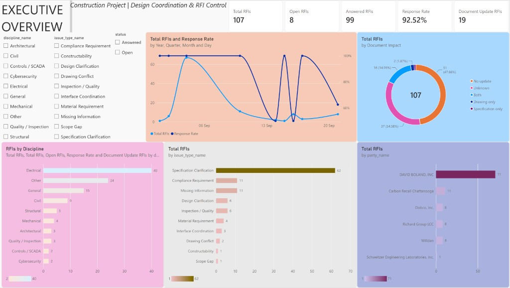

Section 1The page
The page title is Executive Overview, under the header Construction Project | Design Coordination & RFI Control. It is the first page of the Power BI report. The counts below are the unfiltered page, and they match the 107 rows in data/processed/powerbi.

Slicers sit on the left. The five cards run across the top. The line chart and the document-impact donut sit in the middle. Discipline, issue type, and submitter are the three bars along the bottom. Selecting a slicer or a bar filters the cards and the other charts on this page.
Section 2KPI cards
| Card | Value | Meaning |
|---|---|---|
| Total RFIs | 107 | One row per RFI, RFI-001 through RFI-107 |
| Open RFIs | 8 | Response text is blank |
| Answered RFIs | 99 | Response text is present |
| Response Rate | 92.52% | 99 divided by 107 |
| Document Update RFIs | 19 | Drawing update, specification update, or both |
Status is Answered when the response has text, and Open when it is blank. The eight open IDs are RFI-086, RFI-092, RFI-093, RFI-095, RFI-096, RFI-100, RFI-106, and RFI-107.
Section 3Filters
Three slicers filter the page. Discipline lists the ten names from dim_discipline. Issue type lists the ten names from dim_issue_type. Status lists Answered and Open. On the unfiltered page every box is clear, so the charts show all 107 RFIs.
Section 4Day and response rate
The line chart is titled Total RFIs and Response Rate. One line is the count of RFIs received that day. The other is the response rate, on a second axis from about 50% to 100%. The axis subtitle still says year, quarter, month, and day. In this extract every date is a day in September 2026, so the chart is a day chart.
The count peaks at 67 on 4 September. The other eight days hold between 1 and 11 RFIs. The line connects those nine dates, so the slope between 4 September and 10 September is the drop from 67 to 11, not a steady daily decline. Every RFI received through 10 September is answered, so the response rate stays at 100% until then. The eight open RFIs fall on three later days: 1 of 2 on 14 September (50%), 4 of 8 on 16 September (50%), and 3 of 8 on 21 September (62.5%).
Section 5Document impact
The donut is titled Total RFIs by Document Impact. The centre reads 107. Unknown is its own slice. The 19 on the Document Update card are the three Yes slices added together: 16 + 2 + 1.
| Slice | RFIs | Share |
|---|---|---|
| No update | 51 | 47.66% |
| Unknown | 37 | 34.58% |
| Both | 16 | 14.95% |
| Drawing only | 2 | 1.87% |
| Specification only | 1 | 0.93% |
Unknown means the note is blank or only says an attachment was sent. It is 37 of 107 RFIs, so a reading that treats Unknown as No update would hide about a third of the register.
Section 6Discipline, issue type, and submitter
RFIs by Discipline is sorted from Electrical, 40, down to Controls / SCADA and Cybersecurity, 2 each. Electrical is 40 of 107.
Total RFIs by issue type is led by Specification Clarification, 62, which is 58% of the register. Compliance Requirement and Missing Information are 11 each. Constructability and Scope Gap are one RFI each, RFI-023 and RFI-096.
Total RFIs by party uses the submitter relationship, from_party_key. DAVID BOLAND, INC submitted 71, which is 66% of the register. Carbon Recall Chattanooga submitted 11. Dobco, Inc., Richard Group LCC, and Willdan submitted 8 each. Schweitzer Engineering Laboratories, Inc. submitted 1. The ten tasked parties, led by AE with 66, are not on this page.
Section 7How to read it
Unfiltered, the project has 107 RFIs, 99 answered and 8 open, a response rate of 92.52%. Electrical is the largest discipline. Specification Clarification is the largest issue type. Nineteen RFIs record a drawing update, a specification update, or both, and 37 still have an unknown document impact. DAVID BOLAND, INC is the main submitter.
This page is the overview. The next page splits those 19 document updates by discipline and issue type. Tasked parties, the register, and a single-RFI view are not in these two screenshots.